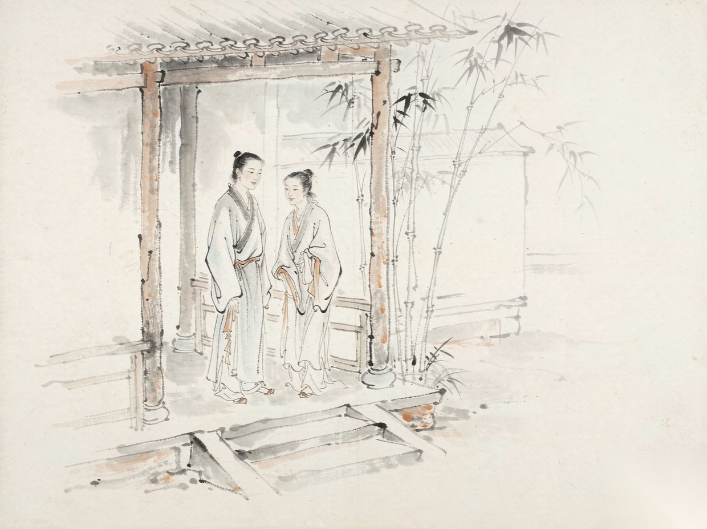

弟于长，宜先知。
古法竖排：自右而左，先读右列「弟于长」，再读左列「宜先知」。
上一课我们读懂孔融让梨：在手足之间，学着克制私心、彼此谦让。这一句，把故事提炼成一门长久的功课。
对待兄长、年长的前辈，这份敬顺友爱，是我们早早就要明白、修习的道理。
先要分清：悌，不等于年纪大的人说什么都要听从。
它的内核，是一份发自内心的敬重。因为长兄、前辈先成长、先阅历，我们心存一份体谅与恭顺；但敬重，不代表放弃自己独立的想法。有不同意见，可以温和好好表达。
孝是善待父母，悌是善待兄长、年长同伴。

为什么要「先知」？因为我们最先接触的人际圈，就是家人手足。良知与宽厚，先在家里的长幼相处里练习；之后走出家门，和师长、朋友相处，才懂得分寸。
谦让、敬顺，不是天生就会。小孩子本能只想顾及自己。正是在一次次相处里，慢慢看见长上的付出，学着礼让、体谅，这份心性慢慢长出来。

这和前面黄香温席的孝心，是同一条成长脉络：先近处，后远处；先家人，后众人。
只恃自我，任性顶撞；把年长之人的包容当成理所当然。
心存敬重，待人有分寸；懂得体谅，长幼之间互相善待。
- 孝和悌是一对：孝敬父母，悌敬兄长前辈。
- 敬重长上是本心的宽厚，不是害怕、被迫听话。
- 德行的练习从家里开始，家里学会恭顺，出外才懂礼仪。
- 敬重不等于盲从，保有尊重，也可以说出自己真实想法。
「长幼」这两个字，最容易被用成压制。三条校准，先立双向。
一、区分悌敬与等级压迫。悌的核心是友爱互敬，不是年长一方拥有支配晚辈的特权。兄要友，弟要恭，是双向；兄长也要爱护弟妹，不能仗年长而苛责、索取。
二、不拿「长幼」压制孩子。不能说「他比你大，你就必须听他的」——对错看事理，不只看年龄。
三、承接教与学的二分。家长在家示范长幼和睦、彼此尊重，属施教一侧；孩子能不能生起敬顺之心、自主选择谦和相处，是学习者的修习功夫。
接上选择力练习：以友爱敬重为底色，孩子拥有独立判断的空间，敬重是本心选择，不是硬性义务。
弟于长，宜先知
一 · 字义与句读弟（tì），通悌；长，年长者。宜先知：在德行修习的次序上，应当优先知晓。全句：对待兄长、年长之人的恭顺友爱之道，是年少初学之时应当优先明白的。
承接孔融让梨的事例，由事入理：举让梨之例，立悌道之纲，孝悌成对，完成基础人伦框架。
二 · 命题考辨勘误重点：后世常把悌固化为下级服从上级、晚辈无条件服从年长者，变成年龄霸权。
原典孝悌的底色是双向的仁德互动：兄友而后弟恭。年长一方有爱护、提携晚辈的本分；晚辈有敬重、体谅长上的本分，不是单向的顺从义务。
《论语》「孝悌为仁之本」，次序是：人先在至亲、长幼之间练习共情与克制私心，再把这份仁爱向外推及众人。所以说「宜先知」，是修习次序在先，不是价值上唯一至高。
三 · 中西对照《论语·学而》：「孝悌也者，其为仁之本与。」与本句次序完全契合。
社会心理学：长幼秩序是早期社群合作的简化秩序，降低人际冲突；现代文明则以平等原则制衡年龄带来的权力差。
德性养成论：仁德由近及远推扩，亲密的家庭关系是德性最初的试验场。
反向思辨：优先强调长幼之序，极易固化年龄尊卑，掩盖年长者的过失，压抑晚辈的表达与独立思考——这是后世流弊，需时时觉察。
四 · 与前后课的张力伦理链条收拢：为人子，方少时 → 亲师友，习礼仪；香九龄（孝·纵向）→ 孝于亲，所当执（守孝之本）；融四岁（悌·横向）→ 弟于长，宜先知（立悌之纲）。
呼应第十三课「人不学，不知义」：孝悌就是义在家伦里最基础的落地。
呼应第十二课「玉不琢，不成器」：克制自我中心、生起敬顺，是打磨习气、显发良知的修习。
呼应第四课「教之道，贵以专」：稳定和睦、彼此善待的家风，是滋养孝悌心性最重要的教化外缘。
一、当年长之人言行失当，还要不要守这份悌敬？敬心可存，如何不盲从？
二、现代社会讲究人人平等，长幼之序的价值在今天该如何转化，而不变成尊卑枷锁？
三、独生子女无手足，悌道如何迁移到同学、学长、前辈的相处之中？